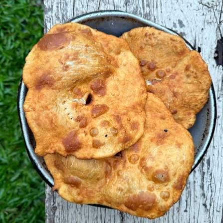

Home
Chipacuero

Description
En Argentina, we enjoy Chipacuero, it is a nice meal to eat along mate.
Ingredients
- 500 g de harina de trigo común
- 60 g de grasa vacuna o manteca (derretida)
- 250 ml de agua tibia
- 10 g de sal fina
- Abundante grasa o aceite para freír
Steps
- Elaboración de la masa: Disolver la sal en el agua tibia. Colocar la harina en un recipiente en forma de corona, incorporar la grasa derretida en el centro y añadir el agua gradualmente hasta unificar los componentes.
- Amasado y reposo: Transferir a la mesada y amasar durante 5 minutos hasta obtener un bollo liso. Cubrir con un paño y dejar reposar por 20 minutos.
- Formado: Dividir la masa en bollos pequeños y estirarlos de forma circular hasta alcanzar un espesor de 2 milímetros. Realizar una incisión central en cada pieza para garantizar una cocción uniforme.
- Fritura: Cocinar en abundante aceite o grasa a alta temperatura durante aproximadamente 1 o 2 minutos por lado, hasta que adquieran un tono dorado.
- Escurrido: Retirar del fuego y disponer sobre papel absorbente antes de servir.